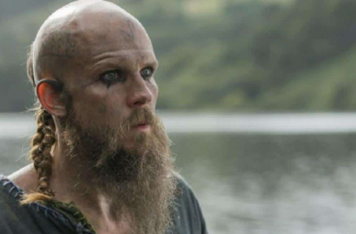

Gustaf Skarsgård (Estocolmo, 12 de novembro de 1980) é um ator sueco, interpreta Floki, o “gênio louco” que projeta e constrói o protótipo da nova geração de navios que podem navegar através do oceano aberto e rios rasos. Sem Floki, Ragnar nunca teria sido capaz de realizar seu sonho de descobrir novas terras e novas civilizações. Floki é um fanático religioso que acredita nos Deuses acima de tudo, incluindo Ragnar (qualquer semelhança com Loki não é mera coincidência).